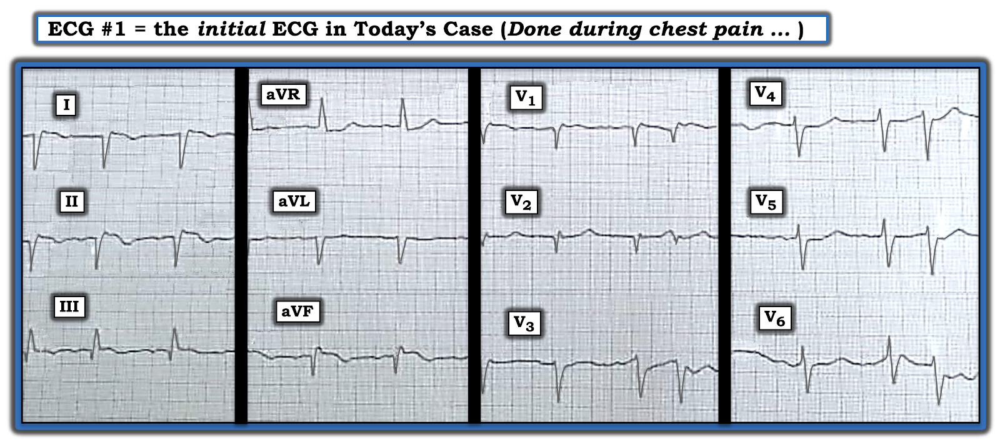
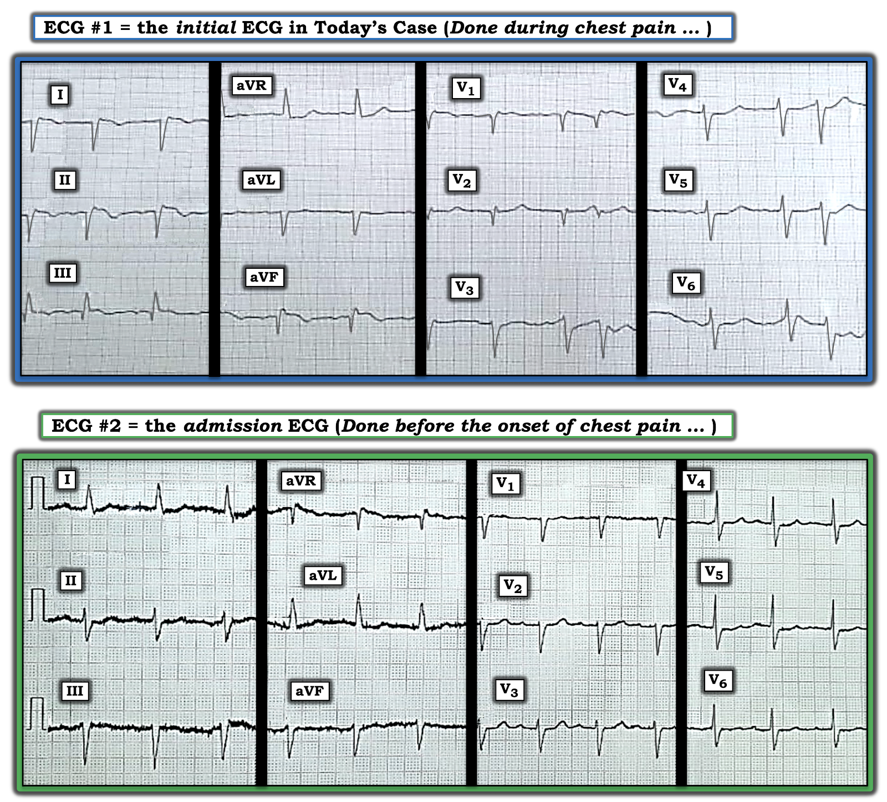
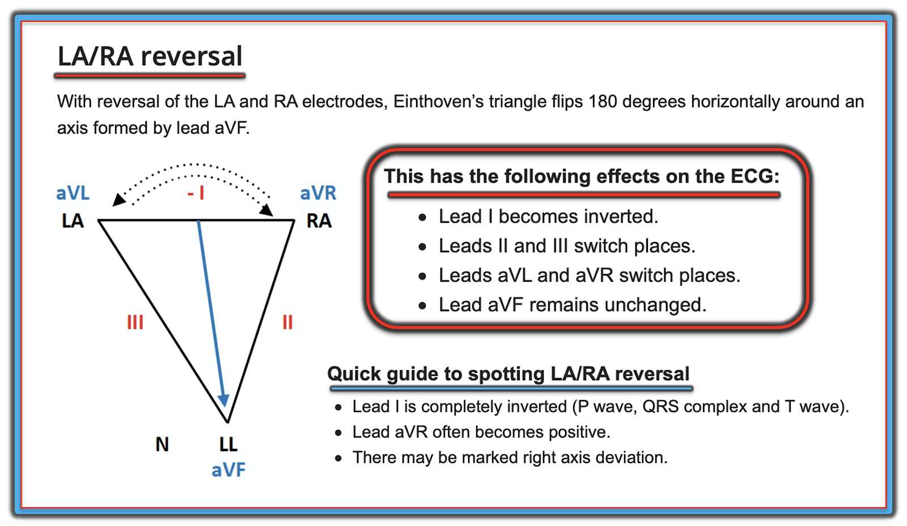
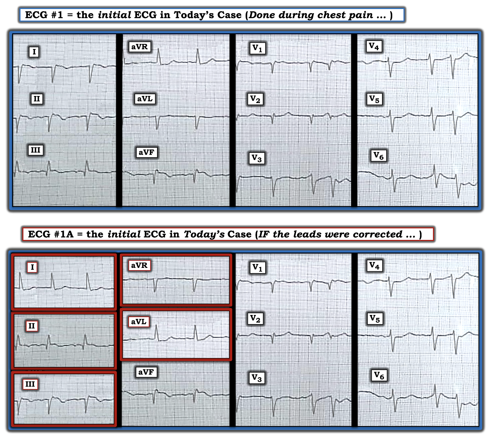
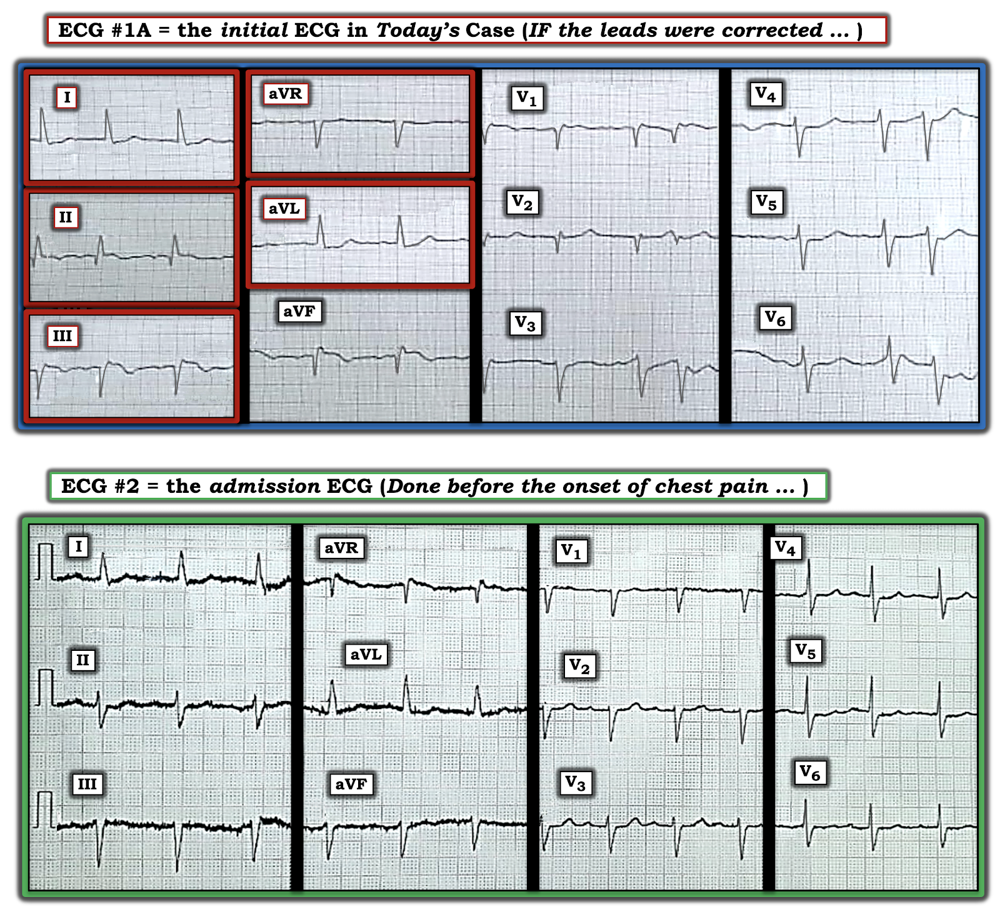
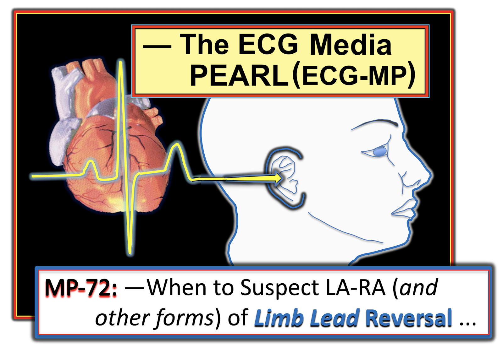

ECG Blog #330 — Viêm phổi kèm 2 dấu hiệu trên điện tâm đồ!
Bệnh nhân hôm nay là một người đàn ông lớn tuổi nhập viện vì sốt và ho — với chẩn đoán lúc nhập viện là viêm phổi mắc phải cộng đồng. Ông được điều trị bằng kháng sinh. Một thời gian ngắn sau khi nhập viện — bệnh nhân than đau ngực, lúc đó điện tâm đồ ở Hình-1 được ghi.
- BẠN sẽ đọc điện tâm đồ ở Hình-1 như thế nào?
- Về lâm sàng — Bạn sẽ làm gì?


SUY NGHĨ CỦA TÔI về điện tâm đồ ở Hình-1:
Đáng tiếc — không có dải nhịp chuyển đạo dài cho điện tâm đồ #1. Ngoài ra — độ phân giải chưa tốt, và các vạch đen rộng đánh dấu chỗ chuyển đổi chuyển đạo có thể đang che khuất một số nhát. Tôi nghi ngờ nhịp là nhịp trên thất kèm ngoại tâm thu nhĩ (PAC — Premature Atrial Contractions) — nhưng cần một dải nhịp dài hơn để xác nhận điều này.
- ĐIỂM THEN CHỐT (PEARL) #1: Có điều gì đó không ổn! Bình thường bạn hầu như không bao giờ thấy một phức bộ QRS gần như âm hoàn toàn ở chuyển đạo I (nhất là khi sóng T cũng âm ở chuyển đạo này).
- Điều càng làm tôi nghi ngờ rằng có điều gì đó không ổn với điện tâm đồ ban đầu ở Hình-1 — là việc thấy QRS dương hoàn toàn kèm sóng T dương ở chuyển đạo aVR.
- ĐIỂM THEN CHỐT (PEARL) #2: Chẳng phải phức bộ QRS và sóng ST-T ở chuyển đạo I — trông giống như những gì ta vẫn chờ đợi ở QRS và sóng ST-T bình thường tại chuyển đạo aVR? (Và chẳng phải QRST ở chuyển đạo aVR — trông giống như những gì ta chờ đợi ở QRST của chuyển đạo I sao?). Sự đảo ngược so với kỳ vọng bình thường của chúng ta về QRST ở chuyển đạo I và aVR gợi ý mạnh rằng có Đảo Ngược điện cực (lead reversal) LA-RA (tức là Left Arm-Right Arm — tay trái-tay phải).
- ĐIỂM THEN CHỐT (PEARL) #3: Thường ta có thể nhanh chóng phân biệt giữa đảo ngược điện cực LA-RA với tim sang phải (dextrocardia) — bằng cách xem tăng tiến sóng R ở các chuyển đạo trước ngực. Vì tim nằm ở nửa lồng ngực phải khi có tim sang phải — bạn thường sẽ thấy tăng tiến sóng R "đảo ngược" ở các chuyển đạo trước ngực (tức là biên độ sóng R nhỏ dần khi đi ngang qua ngực từ chuyển đạo V1 đến V6).
- Đảo ngược điện cực LA-RA gặp nhiều hơn hẳn so với tim sang phải. Ở Hình-1 — biên độ sóng R có tăng dần khi đi từ chuyển đạo V1 đến V6, nên tôi cho rằng ít khả năng có tim sang phải. Dù vậy — xét việc biên độ sóng R vẫn còn nhỏ như thế nào ở chuyển đạo trước ngực nằm ngoài cùng bên trái ( = chuyển đạo V6) — tôi vẫn chưa chắc chắn 100% là đã loại trừ được tim sang phải.
ĐIỀU CỐT LÕI: Điện tâm đồ ở Hình-1 — cần được nhanh chóng ghi lại! Có ít nhất 2 lý do cho việc này:
- Lý do #1: Chúng ta muốn xem điện tâm đồ của bệnh nhân này trông ra sao khi các điện cực được đặt đúng. (Nhân tiện — chúng ta sẽ nghe tim bệnh nhân để xác nhận tiếng tim nằm ở bên trái chứ không phải bên phải lồng ngực).
- Lý do #2: Có một số dấu hiệu bất thường ở các chuyển đạo thành dưới trên điện tâm đồ ở Hình-1 — gồm sóng Q, ST chênh lên và sóng T đảo ngược. Có phải bệnh nhân này đang bị nhồi máu cơ tim (MI) thành dưới cấp?
Ca bệnh tiếp diễn:
Tình trạng đảo ngược điện cực đã không được nhận ra — vì vậy điện tâm đồ ở Hình-1 không bao giờ được ghi lại.
- May mắn là — có một điện tâm đồ khác của bệnh nhân này để so sánh. Như đã nói ở trên — điện tâm đồ #1 được ghi một thời gian ngắn sau khi nhập viện, khi bệnh nhân này (vốn nhập viện vì viêm phổi) — xuất hiện đau ngực.
- Cho rõ ràng — tôi đã đặt 2 điện tâm đồ ghi được ở bệnh nhân hôm nay cạnh nhau trong Hình-2. Tôi gán nhãn bản ghi lúc nhập viện là điện tâm đồ #2 — được ghi như một phần của quy trình thường quy đối với bệnh nhân nhập viện vì viêm phổi. Xin nhấn mạnh: Bệnh nhân không hề đau ngực vào lúc ghi điện tâm đồ #2.
CÂU HỎI:
- Việc so sánh 2 điện tâm đồ ở Hình-2 có xác nhận cách bạn đọc điện tâm đồ #1 không?


Hình-2 giúp ích thế nào:
Việc thấy điện tâm đồ lúc nhập viện trông ra sao (như chúng ta thấy ở Hình-2) — xác nhận rằng đã có đảo ngược điện cực LA-RA ở điện tâm đồ #1.
- Lưu ý rằng chuyển đạo I và aVR trên điện tâm đồ lúc nhập viện ( = điện tâm đồ #2) trông đúng như ta mong đợi — với phức bộ QRS dương và sóng T dương ở chuyển đạo I — và — QRS chủ yếu âm, không có sóng T dương ở chuyển đạo aVR.
- Không còn nghi ngờ gì rằng tăng tiến sóng R là bình thường ở điện tâm đồ #2 (với vùng chuyển tiếp — nơi sóng R trở nên cao hơn độ sâu của sóng S — xuất hiện đúng như mong đợi giữa chuyển đạo V3 và V4).
Điều gì xảy ra khi có Đảo Ngược điện cực LA-RA?
Nguồn tham khảo “Quick GO-TO” (tra cứu nhanh) trực tuyến mà tôi ưa thích nhất về các kiểu đặt sai vị trí điện cực thường gặp nhất là LITFL ( = Life-In-The-Fast-Lane). Tôi đã dùng trang web tuyệt vời mà họ đăng trên website của họ về chủ đề này trong nhiều năm. Trang này rất DỄ tìm — Chỉ cần gõ “LITFL Lead Reversal” vào thanh Tìm kiếm — và đường link hiện ra ngay lập tức.
- Trang web LITFL này mô tả 7 kiểu đảo ngược điện cực thường gặp nhất. Còn có những khả năng khác (tức là khi có thể đặt sai nhiều điện cực) — nhưng những trường hợp này ít gặp hơn và khó dự đoán hơn.
- Cho đến nay (!) — Đảo ngược điện cực thường gặp nhất là nhầm lẫn giữa điện cực LA (Left Arm — tay trái) và RA (Right Arm — tay phải) . Đây chính là sự nhầm lẫn đã xảy ra trong ca hôm nay. Cho rõ ràng — tôi đã tái hiện hình minh họa từ LITFL về đảo ngược LA-RA ở Hình-3.


Điện tâm đồ #1 lẽ ra phải trông như thế nào?
Cho rõ ràng — tôi đã lấy điện tâm đồ ban đầu trong ca hôm nay ( = điện tâm đồ #1) — rồi lật ngược chuyển đạo I — hoán đổi chuyển đạo II và III — và hoán đổi chuyển đạo aVL và aVR ( = điện tâm đồ #1A, là bản ghi phía dưới trong Hình-4).
- Chẳng phải điện tâm đồ #1A giờ đây trông hoàn toàn phù hợp với những gì ta mong đợi ở điện tâm đồ #1 sao? Lưu ý rằng giờ đây có: i) Sóng R dương và sóng T dương ở chuyển đạo I và aVL; và, ii) Một sóng lệch về cơ bản âm hoàn toàn ở chuyển đạo aVR.


CÂU HỎI:
- Xét rằng điện tâm đồ #1A ở Hình-4 cho ta thấy điện tâm đồ #1 (được ghi khi bệnh nhân có một cơn đau ngực dữ dội) lẽ ra phải trông như thế nào — BẠN sẽ đọc điện tâm đồ #1A như thế nào?
TRẢ LỜI:
Cho rõ ràng, ở Hình-5 — tôi đã đặt bản ghi lúc nhập viện ( = điện tâm đồ #2) — cạnh điện tâm đồ ban đầu "đã hiệu chỉnh" trong ca hôm nay ( = điện tâm đồ #1A), được ghi sau khi nhập viện, lúc bệnh nhân bắt đầu đau ngực.
Về điện tâm đồ #2:
- Có vẻ là một nhịp trên thất đều với tần số 80-85/phút. Khó nói đây là nhịp xoang hay nhịp nhĩ lạc chỗ vì nhiễu đường nền (và vì không thấy rõ sóng P dương ở cả 3 nhát hiện trên chuyển đạo II).
- QRS hẹp ở điện tâm đồ #2. Có blốc phân nhánh trái trước (LAHB) (tức là QRS rất âm ở chuyển đạo aVF — và vẫn chủ yếu âm ở chuyển đạo II). Không có lớn buồng tim.
- Thấy phức bộ QS ở chuyển đạo V1 — nhưng ngoài ra không có sóng Q. Tăng tiến sóng R bình thường — với vùng chuyển tiếp nằm giữa chuyển đạo V3 và V4. Sóng S kéo dài đến tận chuyển đạo V6. Sóng ST-T cho thấy đoạn ST dẹt không đặc hiệu (kèm gợi ý ST chênh xuống ở vài chuyển đạo) — nhưng những thay đổi này không có vẻ là cấp tính.
- NHẬN ĐỊNH: Vì bệnh nhân trong ca hôm nay nhập viện vì viêm phổi, và không hề đau ngực vào lúc ghi điện tâm đồ #2 — nên việc đọc điện tâm đồ lúc nhập viện này là không gợi ý một quá trình bệnh tim cấp tính là phù hợp.


Về điện tâm đồ #1A:
- Một lần nữa có nhịp trên thất khá đều với tần số ~75/phút, kèm 2 PAC. Việc không thấy rõ sóng P dương ở 2 nhát hiện trên chuyển đạo II gợi ý đây có thể không phải nhịp xoang.
- Đã có sự dịch chuyển trục so với điện tâm đồ lúc nhập viện — vì phức bộ QRS ở chuyển đạo II của điện tâm đồ #1A không còn chủ yếu âm nữa.
- Mỗi chuyển đạo thành dưới ở điện tâm đồ #1A đều cho thấy — sóng Q (khá lớn ở chuyển đạo III và aVF) — đoạn ST dạng vòm (coving) với mức ST chênh lên nhỏ-nhưng-rõ-ràng — và — sóng T đảo ngược.
- Có thay đổi soi gương (reciprocal) ở chuyển đạo I và aVL bên cao — dưới dạng đoạn ST thẳng đuỗn, chênh xuống nhẹ, và phần cuối sóng T dương
- Tôi nghi ngờ rằng các điện cực chuyển đạo V1 và V2 có thể đã được đặt quá cao trên ngực — vì cả hai chuyển đạo đều có sóng r' ở phần cuối. Tăng tiến sóng R kém (tức là vùng chuyển tiếp không hề xuất hiện ở các chuyển đạo trước ngực). Dù vậy — các thay đổi sóng ST-T ở các chuyển đạo trước ngực không có vẻ là cấp tính.
NHẬN ĐỊNH — Tổng Hợp Lại Toàn bộ:
Bản ghi có nhãn điện tâm đồ #1A (cho thấy điện tâm đồ #1 lẽ ra đã trông như thế nào NẾU các điện cực được đặt đúng) — được ghi do đau ngực mới khởi phát, chỉ xuất hiện sau khi bệnh nhân này đã nhập viện.
- So sánh điện tâm đồ #1A với điện tâm đồ #2 (ở Hình-5) — xác nhận rằng các thay đổi điện tâm đồ mô tả ở trên là mới. Trong bối cảnh này — 2 bản ghi liên tiếp ở Hình-5 nên được đọc là chỉ điểm nhồi máu cơ tim do tắc (OMI) thành dưới cấp (Occlusion-based MI) — cho đến khi bạn chứng minh được điều ngược lại.
- Đáng tiếc — Chúng tôi không có thông tin chi tiết về thời điểm ghi 2 điện tâm đồ này so với thời điểm chính xác bệnh nhân bắt đầu và hết đau ngực. Không có mốc thời gian chính xác này — thì không thể xác định rõ trình tự các sự kiện. Ví dụ — Việc sóng Q ở các chuyển đạo thành dưới trên điện tâm đồ #1A lớn đến vậy (đi kèm ST chênh lên và sóng T đảo ngược chỉ ở mức vừa phải) — gợi ý rằng một khoảng thời gian (? vài giờ) — có thể đã trôi qua kể từ khi khởi phát nhồi máu.
- Sóng T đảo ngược ở các chuyển đạo thành dưới của điện tâm đồ #1A — gợi ý có thể đã xảy ra tái tưới máu tự phát. NẾU cơn đau ngực của bệnh nhân này đã hết vào lúc ghi điện tâm đồ này — điều đó sẽ gợi ý rằng mạch máu "thủ phạm" ( = nhiều khả năng nhất là RCA = động mạch vành phải — Right Coronary Artery) đã tự tái tưới máu, và hiện vẫn còn thông.
- Cuối cùng — Do tôi nghi ngờ các điện cực V1,V2 bị đặt quá cao — việc đánh giá khả năng tổn thương thành sau trở nên khó khăn.
"Bài học" Rút ra Từ ca này:
Đáng tiếc — đảo ngược điện cực LA-RA trong ca hôm nay đã không được nhận ra. Các dấu hiệu điện tâm đồ gợi ý nhồi máu mô tả ở trên cũng không được nhận ra. Vì vậy, trong số các "Bài học rút ra" từ ca hôm nay có những điều sau:
- Chuyển đạo I — thường có phức bộ QRS chủ yếu dương, vì chuyển đạo phía trái này bình thường "thấy" hoạt động điện của tim đi hướng về chuyển đạo I. Tất nhiên có thể có trục lệch phải — nhưng bạn sẽ hầu như không bao giờ thấy một phức bộ âm hoàn toàn (tức là QS) ở chuyển đạo I (như chúng ta gần như đã thấy với phức bộ Qr ở điện tâm đồ #1) — trừ khi có: i) đảo ngược điện cực; hoặc ii) tim sang phải.
- Chuyển đạo aVR — thường có phức bộ QRS chủ yếu âm, vì chuyển đạo phía phải này bình thường nhìn hoạt động điện của tim đi ra xa khỏi điểm nhìn ở xa (nhìn xuống từ vai phải) của chuyển đạo aVR. Rõ ràng, có những trường hợp QRS có hoạt động dương ở chuyển đạo aVR — nhưng việc thấy QRS âm hoàn toàn ở chuyển đạo I cùng với QRS dương hoàn toàn ở chuyển đạo aVR gần như chẩn đoán hoặc là đảo ngược điện cực hoặc là tim sang phải!
- Cách tiết kiệm thời gian nhất (và chính xác nhất) để so sánh các điện tâm đồ liên tiếp — là đọc hoàn chỉnh một điện tâm đồ — rồi xem cả hai điện tâm đồ cùng lúc — đi lần lượt từng chuyển đạo giữa 2 bản ghi để xem có khác biệt đáng kể không. Nếu điều này được làm trong ca hôm nay — các bác sĩ lâm sàng đã ngay lập tức nhận ra rằng sự chuyển từ dạng Qr chủ yếu âm ở chuyển đạo I và sóng R dương hoàn toàn ở chuyển đạo aVR của điện tâm đồ #1 — sang hướng QRS gần như ngược lại hoàn toàn ở điện tâm đồ #2 tại chính các chuyển đạo này — đơn giản là không hợp lý về mặt sinh lý.
- Cuối cùng — Việc đối chiếu thời điểm ghi các điện tâm đồ liên tiếp với sự hiện diện và mức độ tương đối của đau ngực vào lúc ghi mỗi điện tâm đồ — là thiết yếu để hiểu tối ưu trình tự các sự kiện sinh lý. Đây là cách để biết NẾU động mạch "thủ phạm" của một biến cố cấp nhiều khả năng vẫn còn tắc — hay nhiều khả năng đã tự thông trở lại. Nắm được thông tin này là thiết yếu để ra quyết định lâm sàng tối ưu về các phương thức điều trị.
==============================
Lời cảm ơn: Xin cảm ơn Anis Ahmad và Kianseng Ng (từ Malaysia) đã chia sẻ ca bệnh và bản ghi này.
==================================
Các bài ECG Blog Liên quan đến ca hôm nay:
- ECG Blog #205 — Ôn lại Cách Tiếp cận hệ thống của tôi trong đọc điện tâm đồ 12 chuyển đạo.
- ECG Blog #193 — minh họa việc dùng Nghiệm pháp Soi gương (Mirror Test) để giúp nhận ra MI thành sau cấp. Bài blog này ôn lại những điều cơ bản để dự đoán "động mạch thủ phạm". LƯU Ý: Phần Audio Pearl ôn lại lý do tại sao thuật ngữ "OMI" ( = Occlusion-based MI) nên thay thế thuật ngữ quen thuộc hơn là STEMI.
- ECG Blog #184 — minh họa mối quan hệ đối nghịch soi gương "kỳ diệu" khi có thiếu máu cục bộ cấp giữa chuyển đạo III và chuyển đạo aVL (được giới thiệu trong Audio Pearl #2 của bài blog này).
- ECG Blog #222 — Ôn lại khái niệm Thay đổi Sóng ST-T động (dynamic) (và cách dấu hiệu điện tâm đồ này có thể giúp xác định có cần thông tim cấp hay không).
- ECG Blog #230 — Ôn lại CÁCH so sánh các điện tâm đồ liên tiếp (tức là "Bạn đang so sánh Táo với Táo hay với Cam?").
- ECG Blog #80 — ôn lại cách dự đoán động mạch "thủ phạm" (và cung cấp thêm một ca minh họa Nghiệm pháp Soi gương trong chẩn đoán MI thành sau cấp).
- ECG Blog #175 — trình bày một ca thật sự bị Tim sang phải! (và ôn lại những điều cơ bản về nhiều dạng Tim sang phải khác nhau!).
- ECG Blog #264 — trình bày một ca đảo ngược điện cực LA-RA.
- Bài đăng ngày 19 tháng 11 năm 2020 trên Dr. Smith's ECG Blog — trong đó tôi trình bày một ca dễ bị bỏ qua nhưng quan trọng, trong đó đảo ngược điện cực LA-LL đã bị bỏ sót (với "manh mối" là nhận ra sóng P ở chuyển đạo I cao hơn ở chuyển đạo II (I > II)).
- Bài đăng ngày 28 tháng 8 năm 2020 trên Dr. Smith's ECG Blog — Bình luận của tôi (trong Phần bổ sung, ở cuối trang) ôn lại các dấu hiệu mong đợi khi có đảo ngược điện cực LA-LL (Manh mối = sóng P ở chuyển đạo I lớn hơn sóng P ở chuyển đạo II).
- Bài đăng ngày 29 tháng 7 năm 2018 trên Dr. Smith's ECG Blog — Bình luận của tôi (ở cuối trang) ôn lại ca này, trong đó có 2 lỗi kỹ thuật mà nhiều bác sĩ đã không nhận ra ( = đảo ngược điện cực LA-RA và đặt quá cao chuyển đạo V1, V2 trên ngực).
- Bài đăng ngày 11 tháng 2 năm 2020 trên Dr. Smith's ECG Blog — Bình luận của tôi (ở cuối trang) ôn lại ca này, trong đó có đảo ngược điện cực LA-RA.
=======================================
PHẦN BỔ SUNG (4/9/2022):



ECG Media PEARL #72 (5:45 phút Audio) — Ôn lại cách nghi ngờ Đảo Ngược Điện cực chi (đặc biệt là đảo ngược điện cực LA-RA).